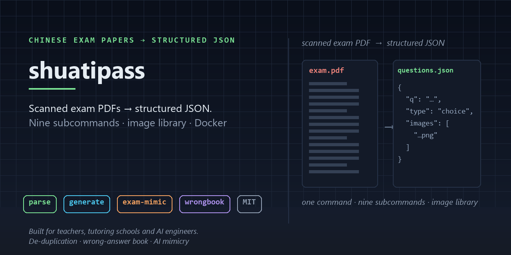

Teachers and students hold thousands of scanned past-paper PDFs that no tool can use. shuatipass parses them into structured JSON with an extracted image library — then generates new questions that mimic the same paper, and keeps a wrong-answer book.
pip install shuatipass
# optional extras
pip install shuatipass[web] # Gradio Web UI
pip install shuatipass[ocr] # Mathpix / pix2tex formula OCR

Detects the source layout, splits by bbox, extracts stems, inline options and question images. Topics, years, provinces and knowledge points are kept.
Three LLM providers. Topics and counts are yours to choose; the result is the same JSON schema, so it drops straight back into the same tools.
Seed it with a parsed paper and it writes a new one in the same shape: same question types, same layout conventions, same difficulty profile.
Mark questions, group them by knowledge point, export a single self-contained HTML file you can send to a student.
Paper layouts differ by publisher. 学科网 is fully supported; other layouts are planned. Scanned PDFs need OCR first — shuatipass ocr handles formulas via Mathpix or pix2tex.